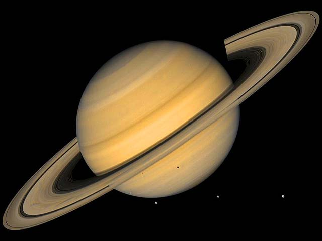

SATURN - The Ring Master
SATURN - The Ring Master


Adorned with thousands of beautiful ringlets, Saturn is unique among the planets. All four gas giant planets have rings -- made of chunks of ice and rock -- but none are as spectacular or as complicated as Saturn's. Like the other gas giants, Saturn is mostly a massive ball of hydrogen and helium.
| Age |
|
| Mass |
|
| Diameter |
|
| Distance from Sun |
|
| Distance from Earth |
|
| Temperature |
|
10 Need-to-Know Things About the Saturn
- If the sun were as tall as a typical front door, the Earth would be the size of a nickel and Saturn would be about as big as a basketball.
- Saturn orbits our sun, a star. Saturn is the sixth planet from the sun at a distance of about 1.4 billion km (886 million miles) or 9.5 AU.One day on Saturn takes 10.7 hours (the time it takes for Saturn to rotate or spin once). Saturn makes a complete orbit around the sun (a year in Saturnian time) in 29 Earth years.
- One day on Saturn takes 10.7 hours (the time it takes for Saturn to rotate or spin once). Saturn makes a complete orbit around the sun (a year in Saturnian time) in 29 Earth years.
- Saturn is a gas-giant planet and does not have a solid surface.
- Saturn's atmosphere is made up mostly of hydrogen (H2) and helium (He).
- Saturn has 53 known moons with an additional 9 moons awaiting confirmation of their discovery.
- Saturn has the most spectacular ring system of all our solar system's planets. It is made up of seven rings with several gaps and divisions between them.
- Five missions have been sent to Saturn. Since 2004, Cassini has been exploring Saturn, its moons and rings.
- Saturn cannot support life as we know it. However, some of Saturn's moons have conditions that might support life.
- When Galileo Galilei looked at Saturn through a telescope in the 1600s, he noticed strange objects on each side of the planet and drew in his notes a triple-bodied planet system and then later a planet with arms or handles. The handles turned out to be the rings of Saturn.
Missions
| SpaceCraft Name |
Organization |
Launch Date |
Type |
Status |
Duration |
Notes |
Launch Site |
|
|
|
|
|
|
|
|